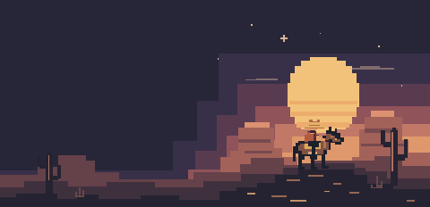

Playable
Econ Arcade
The Family Business and the full economics library: experience markets, incentives, finance, and policy.
Games

An independent outpost on the internet
I build tools, games, and the occasional rabbit hole. A little finance. A little AI. A whole lot of curiosity.
Part workshop. Part arcade. Always something worth poking around in.
01 / Choose your adventure
Three good places to start.
02 / The whole collection
A few finished things. A few wild ideas.
The Family Business and the full economics library: experience markets, incentives, finance, and policy.
Take the chair. Balance inflation, jobs, and the unexpected.
Cooperate or defect? Discover what it takes to build trust.
Follow bills, inspect official records, and compare promises with actions.
Bring your price history. Explore returns, risk, and correlations.
Turn the macro dials and see how a portfolio might respond.
Move a market. Test price controls, taxes, and economic shocks.
Explore bargaining, auctions, incentives, and game theory.
Find equilibrium in a market of changing supply and demand.
Join the family. Run the deli, earn responsibility, and carry economics through one persistent 8-bit world.
Turn saved lab runs into a report you can edit and download.
Find land for a real brief. Check terrain, commute, sources, and room to grow.
A weather-market worksheet for research and paper scenarios.
Use your chat app, connect your own models, or explore with a free local preview.
A very unqualified police chief. A very questionable adventure.
Explore the video-editing workspace. Rendering requires the local setup.
The person behind the programs: experience, projects, and what’s next.
No projects down this trail. Try another search or reset the filters.
Use supported projects with the AI app you already have. Choose the context to share, then continue in your app. The connection guide explains interactive tools and their availability.